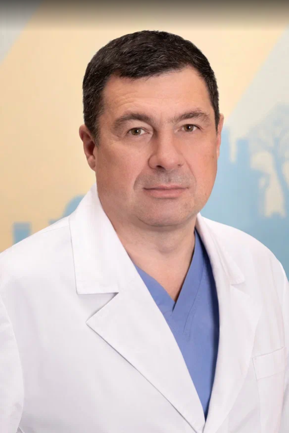

Главный врач КБ "Святителя Луки", руководитель Городского центра эндоскопической урологии и новых технологий, доктор медицинских наук

ДОЛЖНОСТЬ
Руководитель Городского центра эндоскопической урологии и новых технологий
БИОГРАФИЯ
Сергей Валерьевич Попов — известный российский уролог, доктор медицинских наук, главный врач Клинической больницы "Святителя Луки". Под его руководством Городской центр эндоскопической урологии стал одним из ведущих урологических центров России.
Специализируется на эндоскопической и лапароскопической урологической хирургии, онкоурологии и реконструктивной урологии. Профессор Попов подготовил множество специалистов и регулярно участвует в международных конгрессах как докладчик и инструктор.
Окончил Первый Санкт-Петербургский государственный медицинский университет им. академика И.П. Павлова. Прошел ординатуру и аспирантуру по урологии. Повышение квалификации по эндоскопической урологии в ведущих европейских центрах. Член Европейской ассоциации урологов (EAU) и Society for Endourology.
Эндоскопическая хирургия мочевыводящих путей, лапароскопическая урология, онкологическая урология (почка, мочевой пузырь, простата), реконструктивная урология, лечение доброкачественной гиперплазии предстательной железы, мочекаменная болезнь, нарушения мужского репродуктивного здоровья.
Гольмиевая лазерная энуклеация предстательной железы (HoLEP), лапароскопическая радикальная нефрэктомия и паренхимосохраняющая операция на почке, робот-ассистированная лапароскопическая простатэктомия, эндоскопическое лечение камней мочеточников и почек, лечение стриктур уретры.
Лапароскопическая кишечная пластика мочеточника, сложные повторные операции при рецидивирующих стриктурах мочевыводящих путей, фаллопротезирование, имплантация искусственного мочевого сфинктера, лапароскопическая трансплантация почки.
Профессор Попов активно занимается клиническими исследованиями и медицинским образованием. Автор и соавтор более 150 научных публикаций и 5 учебных пособий. Регулярно проводит мастер-классы по эндоскопической урологии для специалистов со всей России и зарубежья.
ГАЛЕРЕЯ

За анализом КТ-снимков перед операцией

Операционная КБ "Святителя Луки"
Профессор Попов лично рассматривает сложные и запущенные клинические случаи. Для записи на личную консультацию обратитесь в приемную.
КЛЮЧЕВЫЕ СОТРУДНИКИ
Наш центр поддерживают ведущие внештатные специалисты, обладающие уникальной экспертизой.
Научный руководитель Центра
Ведущий исследователь в области экспериментальной урологии и биоматериалов. Курирует научные программы центра и международные исследовательские коллаборации.
Зам. главного врача по научной работе, к.м.н.
Координирует научные исследования, клинические испытания и внедрение новых технологий в клиническую практику.
Для сложных и запущенных случаев профессор Попов проводит персональные консультации. Запишитесь через приемную.